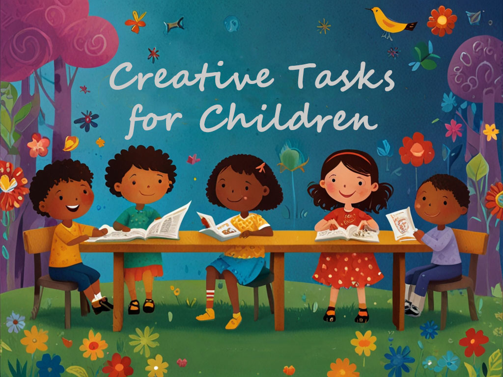

Creativity and Entertainment Tasks
Engage in fun and creative activities that spark imagination and joy.
View Tasks


Household Tasks
Participate in chores and tasks around the house to learn responsibility.
View Tasks